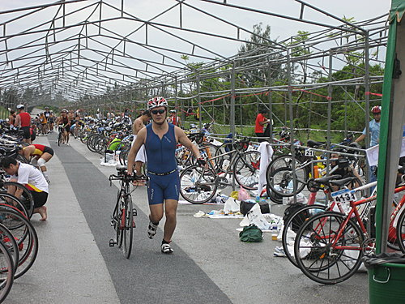

台東鐵人三項，鐵人界傳說中辦的最理想的一場賽事，雖然參加過程一波三折，最後還是用別人的名義參賽，但能夠參與比賽心裡就滿足了。
比賽當天（10月4日）陸上颱風警報已經發佈，但賽門說的好，玩鐵人的都是瘋子，到現場一看果然人山人海，大家打死不退，心中的怯意也一掃而空，拼下去就對了。
本次比賽秩序冊（賽門鐵人參加的是123公里，我參加的是51.5公里）

本次比賽在台東森林公園舉辦，一開始游泳先在活水湖游1500公尺 ，接著騎腳踏車上台11線狂騎40公里 ，最後在繞市區及森林公園跑10公里 。
競賽路線圖：

這次游泳比賽場地活水湖，該湖水質清澈，且賽道又寬又直，是參加過比賽中最好的游泳場地

比賽前先和殘念鐵人史蒂文（騎車爆胎未完賽）合照一張
這個美女似曾相似喔，沒錯，她就是「瘋台灣」的主持人JANET，她也來參加比賽，本文第一張相片就是我和她的合照喔
游泳前，先和小蔣鐵人、史蒂文鐵人合照一張
游完泳，從轉換區牽車出來進行第二項賽事
跑步時的英姿
排隊領車時，若有所思，看看明年是不是要來搞個123公里鐵人賽
比賽結束，我、賽門和鐵人界美女汪旖文（她也是此次比賽女子組冠軍）合照
和男子組冠軍JONES的合照
最後比賽成績：
游泳：42分14秒07
腳踏車：1小時26分5秒26
跑步：1小時17分38秒93
總成績：3小時25分58秒26
11月29日愛河鐵人三項比賽，希望成績可以進步到3小時，加油。